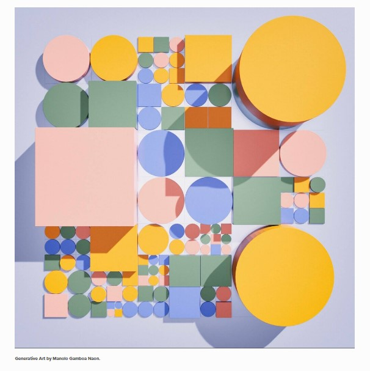
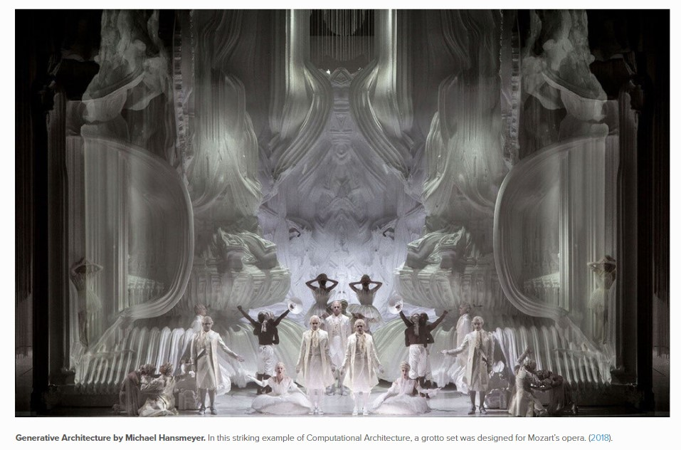
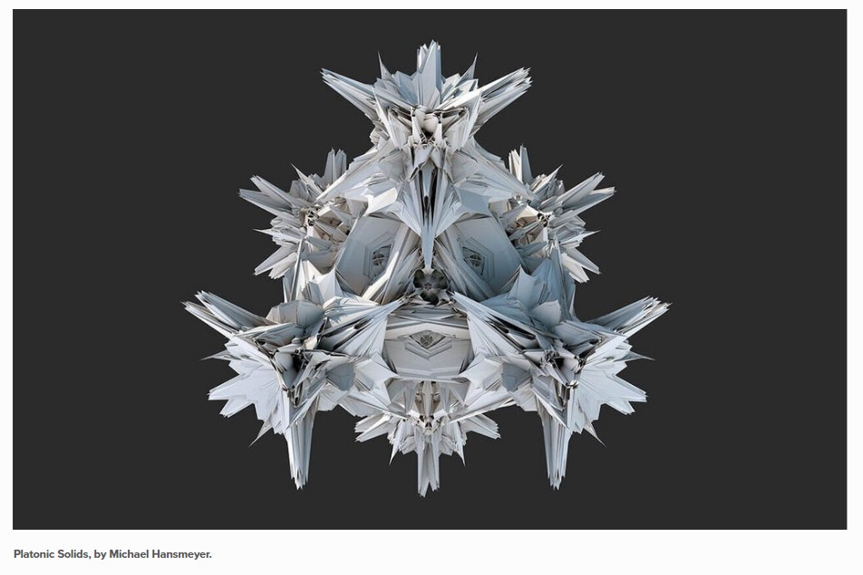

Generative Art : A form of art that is made using predetermined or an autonomous system that is independent to determine the features of the art which otherwise requires artist perspective.
Examples:

Generative Art by Manolo Gamboa Naon.

Generative Architecture by Michael Hansmeyer. In this striking example of Computational Architecture, a grotto set was designed for Mozart’s opera. (2018).

Platonic Solids, by Michael Hansmeyer.
2.Run Fall.R
Let’s create a representation of Fall Leaf using R Studio.
Hans Rosling’s 200 countries, 200 years, 4 minutes
Purpose
The purpose of this study was to plot life expectancy against income for every country since 1810. It shows the development made over 200 Years using 120,000 observations using augmented reality and bubble chart.
Research Design
Hans Rosling’s combined enormous quantities of public data with live commentary to reveal the story of the world’s past, present and future development.
Findings
The author discovered how technology revolutionized the various countries to make them compete with each other and increase the life expectancy. It shows how various events like World War I & II affected this growth. It even shows how Asian and African countries coped up with time and developed themselves.
Critique of figures
The Bubble Charts has income as x-axis and lifespan as y-axis. The y-axis is a linear scale. The chart depicts the growth of various countries like United States, Asia, Africa and United Kingdom.The circles represent the size of the population and varying colors are for different countries. It can be seen that in the early years US and UK showed substantial growth with Industrialization. After World War II and some other countries like India getting independence, even they started growing. With technology in picture, the Asian and the African countries were able to catch up. The majority of countries lie in the middle. China when split into provinces, it can be seen that Shanghai is in par with Italy whereas on the other side economy of Guizhou is like Pakistan. And there are still some rural parts Africa who are yet too far from being called the developed nations. The graph shows the converging world where every country can become healthy and wealthy over time.
The limitations of this study being that the author didn’t mention the data set being used. The data plot is an old one i.e. till the year 2009 after which there has been many changes and technological impact that went through and even the Covid-19 pandemic.
---title: "Assignment 1"author: "Vikrant Sagar R"date: "2022-09-16"categories: [Code, R, Plots, Assignment]draft: falseformat: html: code-fold: true code-tools: trueexecute: echo: false---## Generative Art with R**1.Google "generative art". Cite some examples.**Generative Art : A form of art that is made using predetermined or an autonomous system that is independent to determine the features of the art which otherwise requires artist perspective.Examples:{alt="Generative Art by Manolo Gamboa Naon." fig-align="center"}{alt="Generative Architecture by Michael Hansmeyer. In this striking example of Computational Architecture, a grotto set was designed for Mozart's opera. (2018)." fig-align="center"}{alt="Platonic Solids, by Michael Hansmeyer." fig-align="center"}**2.Run Fall.R**Let's create a representation of Fall Leaf using R Studio.```{r}# Title Fall color# Credit: https://fronkonstin.com# Install packages#install.packages("gsubfn")#install.packages("tidyverse")library(gsubfn)library(tidyverse)# Define elements in plant art# Each image corresponds to a different axiom, rules, angle and depth# Leaf of Fallaxiom="X"rules=list("X"="F-[[X]+X]+F[+FX]-X", "F"="FF")angle=22.5depth=6for (i in1:depth) axiom=gsubfn(".", rules, axiom)actions=str_extract_all(axiom, "\\d*\\+|\\d*\\-|F|L|R|\\[|\\]|\\|") %>% unliststatus=data.frame(x=numeric(0), y=numeric(0), alfa=numeric(0))points=data.frame(x1 =0, y1 =0, x2 =NA, y2 =NA, alfa=90, depth=1)# Generating data# Note: may take a minute or twofor (action in actions){if (action=="F") { x=points[1, "x1"]+cos(points[1, "alfa"]*(pi/180)) y=points[1, "y1"]+sin(points[1, "alfa"]*(pi/180)) points[1,"x2"]=x points[1,"y2"]=ydata.frame(x1 = x, y1 = y, x2 =NA, y2 =NA,alfa=points[1, "alfa"],depth=points[1,"depth"]) %>%rbind(points)->points }if (action %in%c("+", "-")){ alfa=points[1, "alfa"] points[1, "alfa"]=eval(parse(text=paste0("alfa",action, angle))) }if(action=="["){data.frame(x=points[1, "x1"], y=points[1, "y1"], alfa=points[1, "alfa"]) %>%rbind(status) -> status points[1, "depth"]=points[1, "depth"]+1 }if(action=="]"){ depth=points[1, "depth"] points[-1,]->pointsdata.frame(x1=status[1, "x"], y1=status[1, "y"], x2=NA, y2=NA,alfa=status[1, "alfa"],depth=depth-1) %>%rbind(points) -> points status[-1,]->status }}ggplot() +geom_segment(aes(x = x1, y = y1, xend = x2, yend = y2),lineend ="round",color="deeppink4", # Set your own Fall color?data=na.omit(points)) +coord_fixed(ratio =1) +theme_void() # No grid nor axes```**3.Write a critique on a chart in published work****Topic**## Hans Rosling's 200 countries, 200 years, 4 minutes**Purpose**The purpose of this study was to plot life expectancy against income for every country since 1810. It shows the development made over 200 Years using 120,000 observations using augmented reality and bubble chart.**Research Design**Hans Rosling's combined enormous quantities of public data with live commentary to reveal the story of the world's past, present and future development.**Findings**The author discovered how technology revolutionized the various countries to make them compete with each other and increase the life expectancy. It shows how various events like World War I & II affected this growth. It even shows how Asian and African countries coped up with time and developed themselves.**Critique of figures**The Bubble Charts has income as x-axis and lifespan as y-axis. The y-axis is a linear scale. The chart depicts the growth of various countries like United States, Asia, Africa and United Kingdom.The circles represent the size of the population and varying colors are for different countries. It can be seen that in the early years US and UK showed substantial growth with Industrialization. After World War II and some other countries like India getting independence, even they started growing. With technology in picture, the Asian and the African countries were able to catch up. The majority of countries lie in the middle. China when split into provinces, it can be seen that Shanghai is in par with Italy whereas on the other side economy of Guizhou is like Pakistan. And there are still some rural parts Africa who are yet too far from being called the developed nations. The graph shows the converging world where every country can become healthy and wealthy over time.The limitations of this study being that the author didn't mention the data set being used. The data plot is an old one i.e. till the year 2009 after which there has been many changes and technological impact that went through and even the Covid-19 pandemic.**References**[Hans Rosling's famous lectures combine enormous quantities of public data with a sport's commentator's style to reveal the story of the world's past, present and future development. Now he explores stats in a way he has never done before - using augmented reality animation. In this spectacular section of 'The Joy of Stats' he tells the story of the world in 200 countries over 200 years using 120,000 numbers - in just four minutes. Plotting life expectancy against income for every country since 1810, Hans shows how the world we live in is radically different from the world most of us imagine.](https://www.bbc.co.uk/programmes/p00cgkfk "Hans Rosling's 200 countries, 200 years, 4 minutes")